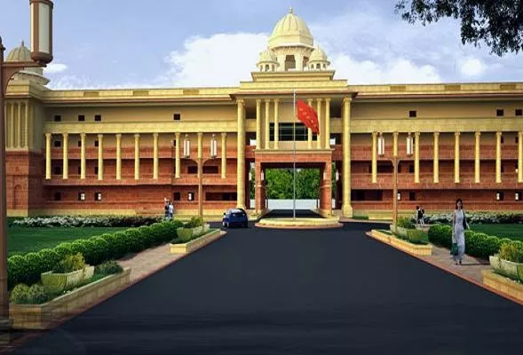
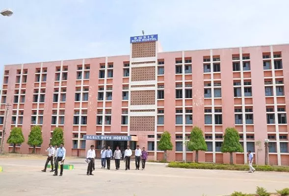
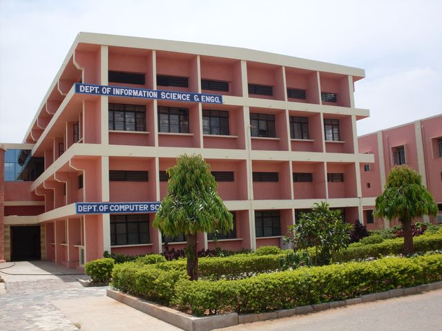

Front Picture Of BGSIT |
Hostel |
Department |
BGS Institute Of Technology ( BGSIT), Mandya was established in 1974 under Sri Adichunchanagiri Shikshana Trust. It is affiliated to Visvesvaraya Technological University (VTU), Belgaum. It is recognized by Government of Karnataka and approved by All India Council for Technical Education (AICTE), New Delhi. The college is dedicated for creating future’s engineers and supporting today’s pioneers. The objective of the college is focusing not only on the academic front, but also on the multi-faceted development of the students by encouraging them in sports, cultural and other extracurricular activities. The college aims to mould students into professional technocrats and also as responsible citizens. The college is situated in a lush green and pollution free environment, which is very much favourable and motivates the students to earnestly pursue their studies. The campus is 90 kilometers away from Bengaluru City known as Silicon Valley of India on the Bengaluru – Hassan – Mangalore National Highway (NH-48) |
Hostel is good but the food is not sooo good and it is not hygiene when I was staying in that hostel.So many facilities have given like sports ,Music instruments,Wifi-facility etc.. |
The Department of Computer Science and Engineering (CSE) was established in the year 2005 with the mission to educate students from all over India and other countries, including those from rural areas, so that they become enlightened individuals, improving the living standards of their Families, Industry and Society. The aggressive rigor in program with industry and research influenced high quality curriculum, has rendered this program as one of the most sought after undergraduate programs in the country. The department has very highly accomplished faculty, including PhD s from premier institutes in India. The department has good record on placements. The department also runs M Tech in Computer Science and Engineering and Doctoral degree programs. More than 40 research papers have been published by the department faculties in the International journals and various National or International Conference proceedings. It is a matter of pride for the department that UMESHA C S secured 1st Rank and topped the university in the year 2012. |